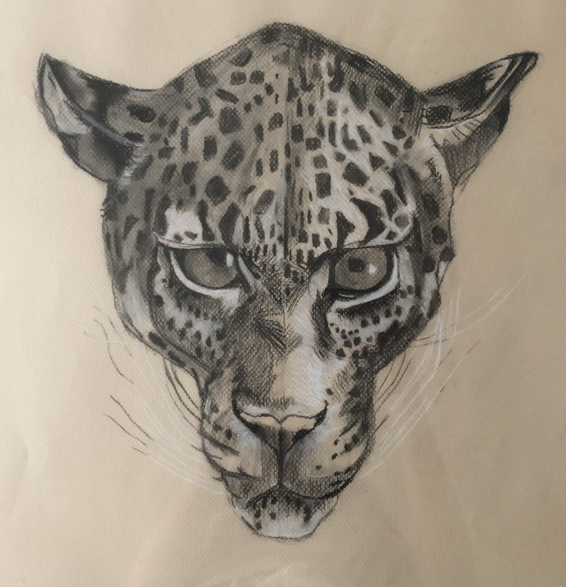
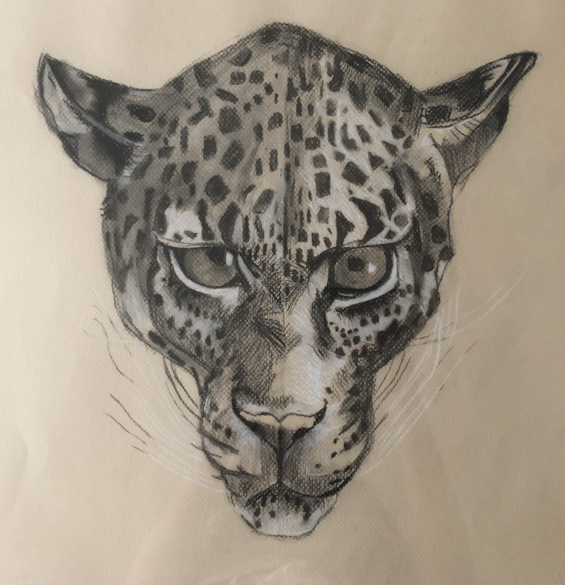

Artworks
A series of various original artworks including paintings, sculptures, and drawings, created over the years. I've received drawing and paintings lessons since the age of 3 allowing me to have a large artwork collection. I've only shown the ones I'm most proud but, fortunately, there are more to see.


 



×